Page index / courses
COURSE NUMBER - Materials and Texts.


-RU 101-
Beginning Russian
Readings and Texts
BOOKS AVAILABLE FOR PURCHASE:
Note: This textbook package has recently gone our of print. The entire package of materials is available as a course pack from the college bookstore.
- Russian Now!, Textbook (Barron's)
- Russian Now!, Workbook (Barron's)
- Russian Now!, Grammar Guide(Barron's)
- Russian Now!, Cassette Package (Barron's)
Recommended: (Copies on reserve or reference in library):
- Oxford English-Russian Dictionary.
- 501 Russian Verbs
Books on Reserve: Since you will need to bring the text to class everyday and to do the workbook exercises on the sheets themselves, these copies are for reference and your convenience only. You must purchase the course pack.
- Russian Now!, Textbook (Barron's)
- Russian Now!, Grammar Guide (Barron's)
Additional Materials:
- A set of 3"x5" index cards